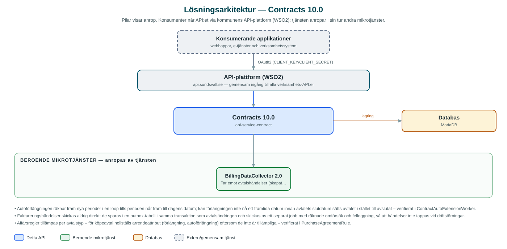

Contracts
Hanterar kommunens avtal om mark och nyttjanderätter – arrenden, köpeavtal och andra upplåtelser – med parter, villkor, bilagor och automatisk förlängning.
Om API:et
Contracts är kommunens register-API för avtal kopplade till mark och nyttjanderätter: markarrenden, tomträtter, jakt- och jordbruksupplåtelser, köpeavtal med mera. Varje avtal lagras med parter (intressenter med roller), fastighetsbeteckningar, avtalsvillkor, avgifter, faktureringsuppgifter och avtalsperioder, och kan förses med bilagor som avtalsdokument.
API:et hanterar hela avtalets livscykel. Nattliga jobb förlänger automatiskt avtal med autoförlängning när avtalsperioden löper ut – med hänsyn till uppsägningstider och slutdatum – och avslutar avtal vars slutdatum passerats. Affärsregler per avtalstyp tillämpas vid ändringar; för köpeavtal rensas exempelvis arrendespecifika attribut som inte är tillämpliga.
Händelser om skapade, ändrade, förlängda och avslutade avtal publiceras till kommunens BillingDataCollector, som använder dem som underlag för fakturering. Publiceringen sker via ett transaktionellt utkorg-mönster (outbox) med omförsök, så att inga faktureringshändelser går förlorade.
Det här gör API:et
- Avtalsregister – Skapa, hämta, uppdatera och ta bort avtal med parter, fastighetsbeteckningar, villkor, avgifter och faktureringsuppgifter.
- Många avtalstyper – Arrenden, tomträtter, köpeavtal, jakt- och jordbruksupplåtelser, korttidsupplåtelser med flera – med typspecifika affärsregler.
- Bilagor – Avtalsdokument och andra bilagor lagras per avtal med metadata och kategori.
- Automatisk förlängning – Ett nattligt jobb förlänger avtal med autoförlängning när perioden löper ut, med hänsyn till uppsägningstid och slutdatum.
- Automatiskt avslut – Avtal vars slutdatum passerats sätts automatiskt till avslutade.
- Faktureringshändelser – Skapade, ändrade, förlängda och avslutade avtal publiceras till BillingDataCollector som faktureringsunderlag.
- Sökning med filtrering – Avtal söks med dynamiska filter och paginering (upp till 100 per sida).
API-dokumentation
API:ets samtliga resurser, parametrar och datamodeller finns beskrivna i en OpenAPI-specifikation som är hämtad ur källkodsförrådet. Den kan utforskas interaktivt i Swagger UI eller laddas ner som YAML. Programvaruförteckningen (SBOM) listar tjänstens samtliga tredjepartskomponenter med version och licens.
Teknisk dokumentation
Nedan beskrivs hur tjänsten är uppbyggd, vilka andra tjänster den anropar och vad som krävs för att driftsätta den. Informationen är härledd ur källkoden och dess konfiguration på GitHub.
Arkitektur

API:et är en mikrotjänst (Java 25 (via dept44-föräldern), Spring Boot via kommunens gemensamma tjänsteplattform dept44 (8.0.8), byggd med Maven). Konsumenter når tjänsten via kommunens gemensamma API-plattform (WSO2) på api.sundsvall.se – tjänsten anropas aldrig direkt. Tjänsten anropar i sin tur andra mikrotjänster i kommunens tjänstelandskap. Lagring: MariaDB med Flyway-migrationer; lagrar avtal, intressenter, villkor, bilagor samt en utkorg (outbox) för faktureringshändelser.
Teknikstack
- Språk: Java 25 (via dept44-föräldern)
- Ramverk: Spring Boot via kommunens gemensamma tjänsteplattform dept44 (8.0.8), byggd med Maven
- Databas: MariaDB med Flyway-migrationer; lagrar avtal, intressenter, villkor, bilagor samt en utkorg (outbox) för faktureringshändelser
- Övrigt: Transaktionellt outbox-mönster med omförsök för händelsepublicering, ShedLock för schemalagda jobb, optimistisk låsning av avtal
Beroenden till andra mikrotjänster
Tjänsten anropar följande mikrotjänster. Versionerna är hämtade ur källkodens integrationsklienter.
| Tjänst | Version | Användning |
|---|---|---|
| BillingDataCollector | 2.0 | Tar emot avtalshändelser (skapat, uppdaterat, förlängt, avslutat, borttaget) som underlag för fakturering. |
Programvaruförteckning
Tjänsten bygger på 306 tredjepartskomponenter fördelade på 14 olika licenser. Till skillnad från tabellen ovan, som listar andra mikrotjänster, avses här de programbibliotek som ingår i bygget. Se programvaruförteckningen för hela listan.
Konfiguration och driftsättning
- application.yml med URL och OAuth2-klientuppgifter (client credentials) för BillingDataCollector-integrationen
- MariaDB-anslutning; databasschemat versionshanteras med Flyway
- Schemalagda jobb för avslut (kl. 01) och autoförlängning (kl. 02) med ShedLock-låsning
- Maxstorlek 50 MB per bilaga och maximalt 100 träffar per sida i sökningar
- Anrop görs per kommun – municipalityId ingår i alla API-vägar
Noterbart ur källkoden
- Autoförlängningen räknar fram nya perioder i en loop tills perioden når fram till dagens datum; kan förlängningen inte nå ett framtida datum innan avtalets slutdatum sätts avtalet i stället till avslutat – verifierat i ContractAutoExtensionWorker.
- Faktureringshändelser skickas aldrig direkt: de sparas i en outbox-tabell i samma transaktion som avtalsändringen och skickas av ett separat jobb med räknade omförsök och felloggning, så att händelser inte tappas vid driftstörningar.
- Affärsregler tillämpas per avtalstyp – för köpeavtal nollställs arrendeattribut (förlängning, autoförlängning) eftersom de inte är tillämpliga – verifierat i PurchaseAgreementRule.
- Avtalsentiteten har versionskolumn för optimistisk låsning, så samtidiga uppdateringar av samma avtal upptäcks.
Källkod
Källkoden är öppen och finns hos Sundsvalls kommun på GitHub. I källkodsförrådet finns även instruktioner för att klona, konfigurera och starta tjänsten i egen miljö.